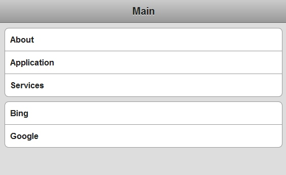
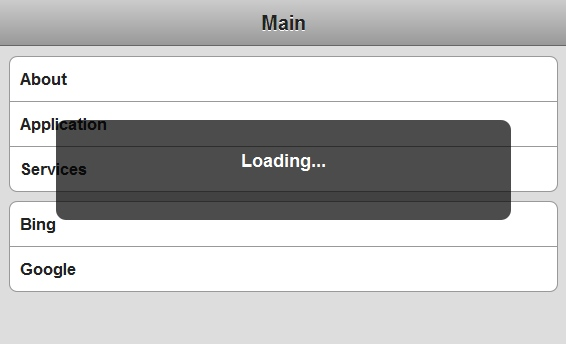
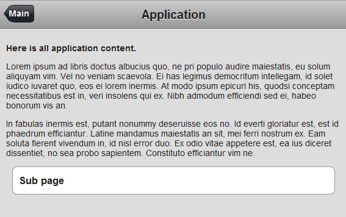
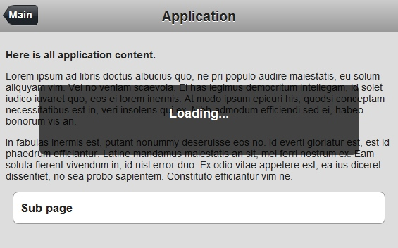
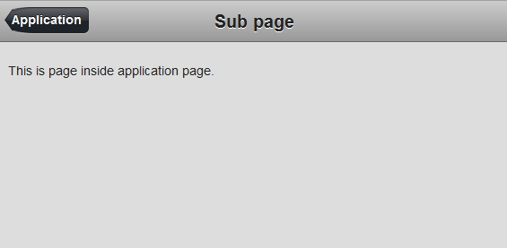

HTML Application Frame
[Site (recommended width ~640px)
Source]
This is not my own design, but based on e-book,
Building iPhone Apps with HTML, CSS, and JavaScript
.
HTML Site that behaves more like desktop application.
All content is shown on main page's container div.
When loading new page, loading div is shown. Page content is loaded to container.
When loading is complete, "hijack" all links from page to call loadPage function and remove loading div.
When loading new page collect it to history. If on sub page show previous page as button on left corner.
// Simple version
$(document).ready(function(){
loadPage();
});
function loadPage(url) {
// Show loading panel
$('body').append('<div id="progress">Loading...</div>');
if (url == undefined) {
// Load main page
$('#container').load('main.html .event', hijackLinks);
} else {
// Load link page
$('#container').load(url + ' #content', hijackLinks);
}
}
function hijackLinks() {
$('#container a').click(function(e){
e.preventDefault();
loadPage(e.target.href);
});
// Remove loading panel
$('#progress').remove();
}

Main Menu. Bing and Google are external links.

Loading page

Content Page. Main link in up left.

Loading sub page

Sub page. Application link in up left.